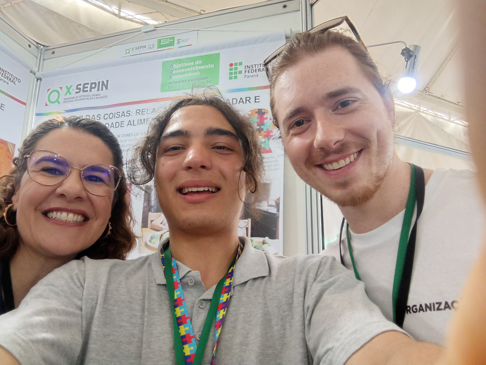
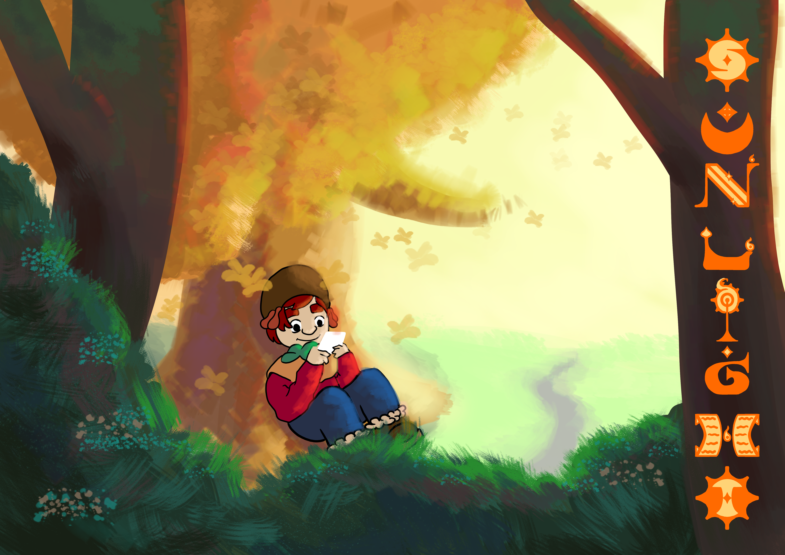

Sobre Mim
Sou programador com interesse em desenvolvimento web, back-end e modelagem 3D. Tenho facilidade em trabalhar em equipe, organização de tarefas e comunicação para resolução de problemas.
Tecnologias
Projetos
Projeto "O sabor das coisas"
Projeto apresentado no Seminário de Extensão, Ensino, Pesquisa, Pós-graduação e Inovação do IFPR, em Foz do Iguaçu.
Tecnologias utilizadas: HTML, CSS, JavaScript e trabalho em equipe.
Projeto de Biologia
Desenvolvimento de projeto interdisciplinar com equipe de 6 integrantes no IFPR.
Projeto Frogs & Flies
Desenvolvimento de projeto de recriação de jogo antigo. Link do projeto
Experiência
- Participação em projeto colaborativo com equipe de 4 pessoas.
- Apresentação de projeto acadêmico em evento do IFPR.
- Participação voluntária em projeto de ensino de português para estrangeiros.
- Participação na 3ª fase da Olimpíada Brasileira.
Formação
- Ensino Médio Técnico em Programação de Jogos Digitais — IFPR (2023 - 2026)
- Ensino Fundamental II — Escola Nossa Senhora da Esperança (2018 - 2022)
Idiomas
Contato
Email: arturzanella42@gmail.com
Telefone: +55 41 99191-1565
Instagram: @arturzanelladossantos2



